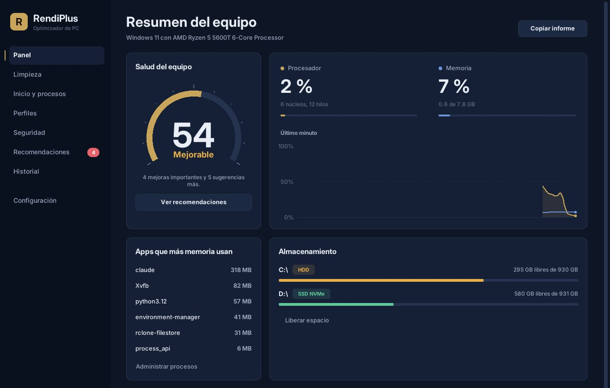
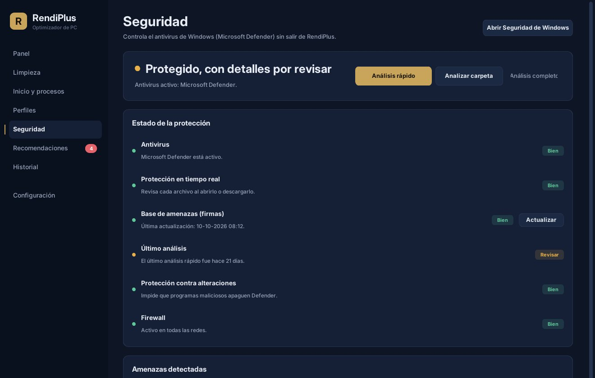

Tu PC, medido y afinado. Sin trucos ni promesas mágicas.
RendiPlus revisa tus componentes, te da un puntaje de salud y aplica los ajustes que de verdad mejoran el rendimiento. Cada cambio queda registrado y se puede deshacer.
Versión 1.1, gratis. Windows 10 y 11, macOS.

Todo lo que tu PC necesita, en un solo lugar
Cada sección hace una cosa y te dice qué cambió. Nada se aplica sin que lo pidas.
- Panel
- Uso de procesador, memoria y GPU en vivo, temperaturas y un puntaje de salud de 0 a 100.
- Limpieza
- Temporales, cachés de navegadores, papelera y descargas viejas de Windows Update. Solo toca carpetas seguras y nunca tus documentos.
- Inicio y procesos
- Decide qué programas arrancan con tu PC y cierra los que consumen de más, igual que el Administrador de tareas.
- Perfiles
- Rendimiento, Equilibrado y Ahorro. Cambian el modo de energía, el Modo de juego y cierran las apps que elijas antes de jugar.
- Recomendaciones
- Revisa tu hardware y te dice qué mejorar primero: RAM en un solo canal, monitor a menos Hz de los que soporta, drivers viejos.
- Historial
- Registra cada cambio. Puedes deshacer uno por uno o volver todo a como estaba con un clic.
Lo que RendiPlus no hace
Muchos optimizadores prometen el doble de FPS apagando servicios a ciegas. RendiPlus solo aplica ajustes que tienen un efecto real y medible.
- No borra tus archivos personales.Los archivos grandes se muestran para que decidas tú.
- No apaga servicios de Windows.Desactivarlos al azar suele romper funciones y casi nunca da rendimiento.
- No "limpia la RAM".Windows ya administra la memoria. Vaciarla a la fuerza hace que todo vuelva a cargar más lento.
- No instala un antivirus propio.Usa Microsoft Defender, que ya viene con Windows y está entre los mejor evaluados.
Calidad gráfica pensada para tu GPU
RendiPlus identifica tu tarjeta gráfica y tu pantalla, y te sugiere desde dónde partir en el menú de gráficos de cada juego.
| RTX 3050, 1920 x 1080, 144 Hz | Rendimiento | Equilibrado | Calidad |
|---|---|---|---|
| Pensado para | Valorant, CS2, Fortnite | La mayoría de los juegos | Mundos abiertos |
| Calidad general | Medio | Alto | Muy alto |
| Escalado | DLSS Rendimiento | DLSS Calidad | DLSS Calidad |
| Texturas | Alto | Alto | Alto |
| Sombras | Bajo | Medio | Muy alto |
| FPS objetivo | 144 o más | 60 a 120 | 45 a 60 |
Ejemplo real de lo que muestra RendiPlus para una RTX 3050 con 6 GB de VRAM. Tu PC verá sus propios valores.

Seguridad sin otro antivirus
La sección Seguridad controla Microsoft Defender sin salir de RendiPlus: protección en tiempo real, base de amenazas, firewall y amenazas detectadas.
Desde ahí lanzas un análisis rápido, completo o de una carpeta, y actualizas las firmas con un clic. En Mac revisa XProtect, Gatekeeper, el firewall y FileVault.
Instalar toma un minuto
No necesitas tener Python ni ningún otro programa instalado.
- Descarga RendiPlusPara Windows es un archivo .zip con la carpeta del programa.
- Descomprime y abreExtrae la carpeta donde quieras y abre RendiPlus.exe.
- Si Windows te avisaSi aparece "Windows protegió su PC", haz clic en Más información y luego en Ejecutar de todas formas.
Preguntas frecuentes
¿Es gratis?
Sí. Puedes descargar y usar RendiPlus gratis en tus propios equipos.
¿Por qué Windows dice "Windows protegió su PC"?
Windows muestra ese aviso con los programas nuevos que todavía no tienen firma digital. Es un aviso de que no conoce al editor, no de que haya un virus. El código de RendiPlus es público en GitHub para que cualquiera pueda revisarlo.
¿Puedo deshacer los cambios?
Sí. Los perfiles, ajustes y programas de inicio quedan en el Historial, y puedes deshacerlos uno por uno o todos juntos. Lo único que no se puede recuperar es lo que borra la Limpieza, por eso te pide confirmación antes.
¿Cómo veo la temperatura del procesador?
Windows no la entrega por sí solo. Instala LibreHardwareMonitor (gratis), ábrelo como administrador y RendiPlus la leerá automáticamente.
¿Funciona en Mac?
Sí: diagnóstico, limpieza, programas de inicio, seguridad y recomendaciones. Algunas opciones, como la bandeja del sistema y los planes de energía, son solo de Windows.